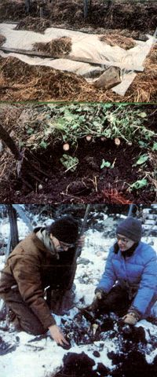

These northeastern homesteaders share their secret to harvesting fresh vegetables year round:
"You mean you actually grow prod uce all winter without a green house?" Our wide-eyed friends were understandably skeptical as we carried snow shovels, and a few more conventional garden tools, out to the vegetable plot. Later, however-when we all shared a delicious meal that included freshly harvested turnips, carrots, and brussels sprouts-our guests stopped questioning our sanity and began to ask how they too could plant in midsummer and eat fresh from-the-earth vegetables all winter. We were quick to tell them that almost any one who has a healthy yen for just-picked garden produce can, with a bit of extra planning and work, duplicate our results. After all, we manage to do it despite the punishing winters that are typical on our New York state homestead!
My wife Sherrie and I actually started year-round gardening out of sheer necessity. During the awful winter of '76, we found ourselves isolated from our town neighbors ... weakened by repeated attacks of flu . . . and out of work. It was obvious to us that we'd have to be able to produce all of our own food if we were going to survive many more years in the country.
We had, for several years prior to that, been stretching our growing season to what we'd assumed were its limits. Each spring, as soon as the ground was workable, we'd set out our first cabbage plants and begin to germinate other seeds on wet newspaper in the kitchen. At the opposite end of the gardening year, our vegetable plot usually kept producing right up until the hard frosts of October. And that, we thought, was about all we could do . . . short of moving south.
But then we read about what we now consider to be one of the great moments in modern homesteading, as reported in Helen and Scott Nearing's classic Living the Good Life . It seems the couple accidentally left a lettuce plant under a bench inside a windowed shed, and later found that it had survived a night of far-below-freezing temperatures! Learning from that fortunate discovery, the Nearings developed their "sun-heated" greenhouse.
Well, we didn't have the cash necessary to build an enclosed growing space ... but we did scrounge up an old sheet of polyethylene plastic to experiment with. One raw morning in mid-March, we carefully placed some sprouted seeds in the mud-and-ice slurry that had formed on a protected, sunny spot in the garden, and propped the plastic over them. During the next four weeks we were hit by three heavy snowfalls ... and after each blizzard we'd carefully lift the plastic blanket and shake the snow off. By early spring the clear material had captured enough solar energy to effectively warm the soil, and the hardy seedlings prospered in their mini-hothouse.
When we finally sat down to munch on the tiny, incredibly delicious greens that resulted from our first experiment, we knew we'd never again have to depend on "the system" for our vegetables. We im mediately set about organizing and planting a garden that would supply us with fresh food every day of the year.
Now-after a half-decade's education in the science of cultivating a vegetable plot while snow is on the ground-we've reduced our technique to six basic procedures that any gardener can follow to insure a bountiful midwinter harvest. Of course, if you live in a milder climate than ours, you may find some of the precautions unnecessary (although they would certainly provide a measure of insurance against an unexpected cold snap).
[1] Select the hardiest vegetables you can find . All members of the Brassica genus are good candidates for a winter garden ... including white and red cabbage, cauliflower, broccoli, Chinese cabbage, brussels sprouts, collards, and kale. We're still test-planting such cultivars (by setting out two varieties of each vegetable every year) to determine which are hardiest, tastiest, and most productive.
Root crops that can be winter-gardened successfully include carrots, turnips, and beets. We've even chopped parsnips out of frozen earth and served them minutes later, steaming and delicious! In late winter, beets do sometimes turn "woody". . . but when they do, they'll also send out edible red and green leaves, which we pick for February salads.
We enjoy other fresh greens all winter, too ... by concentrating on the hardiest varieties of turnip, mustard, and spinach. As a rule, leafy crops require more protection than do root vegetables . . . but even when some of a plant's leaves are accidentally blackened by frost, the surviving foliage can be picked and savored. We've also found that Swiss chard will live through surprisingly low temperatures, especially if it's been hardened by the milder frosts of early autumn.
Furthermore, many lettuce varieties are even more cold-hardy than is chard. The Nearings taught us-in their book Building and Using Our Sun-Heated GreenHouse - to seek out the varieties with reedy stems. (Those that are tender and bulging with water will freeze readily . . . and that destroys nutrient-bearing cells, causing the plant to rot.) Oak Leaf and Black-Seeded Simpson are our lettuce standbys.
Most types of onions are well suited to winter gardening. We particularly like green onions (which actually thrive under snow), garlic, shallots, and leeks. Other promising varieties are chives and rocambole, a European leek.
[2] Prepare raised beds. A winter garden must be well drained, since any water in the soil could freeze and damage delicate roots. The best way we know to insure good drainage is to plant winter crops in raised beds. Our regular garden consists of 16 elevated plots, each of which measures 3' X 24'. We normally use only three or four of these beds for cold-weather vegetables.
To prepare a deep bed, we first dig down a foot or more and fill the cavity with a mixture of leaves, grass, old hay, kitchen garbage, and pony or chicken manure. Once we've produced a compost pile that rounds up about two feet above the surrounding surface, we cover the mound with a thin layer of topsoil and plant our seeds without waiting for the decomposing material to "cook down". When a good amount of organic matter is used, the soil will hold enough moisture for the plants . . . and any excess water will drain off.
Every year thereafter we turn more organic matter into the beds and add compost from our main pile. This soil preparation is-we think-best done by hand: We first dig a three-foot trench across each bed .. . then fill the space with compost and organic matter ... and dig another trough right next to it. The topsoil that's removed from the second furrow is piled on top of the compost in the previous trench. After two years of such treatment, the beds become light and spongy and are loaded with nutrients and earthworms. To finish the preparation of our garden plots, we outline each mound with recycled railroad ties.
[3] Pay attention to the average first frost (AFF) date for your climate. We set the sowing times of our winter crops so that they'll be two-thirds to three-quarters mature by the first frost. Doing so requires careful calculation, because the plants will face a growing season of gradually shortening-rather than lengthening-days. For that reason, we always al low winter plants a little longer than normal to mature (the harvest should begin about one month after the AFF date).
It also helps to interplant winter vegetables with quick-to-mature early crops. That way, the young seedlings receive some shade from the late summer sun... and then, just when they grow big enough to demand more space, the protecting warm-weather plants will be harvested.
[4] Use mulch to provide insulation against cold. As plants grow closer to maturity-and as the AFF date nears-we cover the beds with dry hay and/or leaves. (We obtain our hay from neighboring farmers who need to make room in their barns for new bales . . . and we can usually pick up free bags of leaves from lawn-raking suburbanites.)
At least two weeks before the first predicted frost, we make a point of listening to the evening weather reports. If it's predicted that the temperature will drop into the 30's in town, we know that there could well be a frost at our country home ... so we unroll the poly and cover the beds to seal in the earth's remaining heat. Short sticks are sunk into the corners of the beds to hold up the plastic and prevent any foliage from touching it and, possibly, freezing. (It's just as important-during the early frost period-to remove the sheeting first thing in the morning, since the sun's rays hitting the plastic could quickly create an oven that would cook your young vegetables long before they're ready to be eaten!)
Unfortunately, no matter how careful he or she may be, a winter gardener will probably slip up now and then or be caught off guard by an early freeze. When we look out-on an unexpectedly chilly morning-to see that we've been tricked by Jack Frost, we immediately head for the garden and treat the affected greenery with a gentle spray of cold water. (We do this before the sun rises, to give the plants a chance to thaw out gradually.) Assuming most of the crops survive the preseason catastrophe (and if they're cold-resistant varieties, chances are that they will), the remaining specimens will be hardier as a result of their exposure.
[5] As the cold deepens, mulch all beds under more material and cover them with plastic. Before the ground freezes, and before the first big snow (but as late as possible), we bury our winter beds under a foot of dry hay or leaves. (The latter material is actually piled over the tops of our leaf vegetables ... which, by that time, will have effectively stopped growing.) This insulating layer will keep the ground from freezing in the early part of the season . . . but it won't be needed if you have a deep early snow. With its ability for trapping air, snow is actually very capable of retaining warmth . . . and cold-hardy crops will stay green and healthy as long as the winter blanket covers them!
However, we can't count on having a foot of snow before the first garden-damaging frost (and it's not likely that you can, either) ... so we routinely pile on batts of hay and cover them with 4- to 6 mil polyethylene. Each plastic sheet is weighted down with planks, rocks, or soil to keep the winter winds from tearing it loose.
[6] Harvest from the ends of the beds only. By late November or early December, we've usually exhausted the produce of our fall plot and are eager to taste our late-planted carrots, turnips, and Chinese cabbage. However, it's important, in a winter garden, not to harvest just anywhere . . . but to open up only the ends of a bed and take the vegetables out quickly.
We rarely disturb a plot when the temperature is far below freezing . . . and then only for a few minutes, in order to avoid causing cold damage to the unpicked produce. (Usually-even in midwinter-we find the earth surprisingly soft and moist, full of worms crawling up happily to the surface!) After harvesting, we carefully close the bed by replacing the hay mulch, refitting the polyethylene on top, and weighting it down securely along the sides and at the ends. If the weather is particularly severe-or if we encounter frozen ground when digging into the soil-we might throw some additional insulating hay on top of the plastic.
Winter gardening does involve more work than growing warm-weather vegetables (and those outdoor chores may not be quite so enjoyable when they have to be performed in freezing winds) . . . but we think the results are well worth the effort. Furthermore, as still-hardier vegetable varieties become available, we're convinced that the winter garden will become a common feature on homesteads in all climate zones.
Just remember to approach the whole undertaking in a spirit of experimentation. It's merely a matter of trying lots of different vegetables-and planting more than one variety of each-to determine which ones will thrive in cold weather. And don't be discouraged by failures! Not all of our winter crops yield abundant, delicious harvests, either . . . but we weather disappointment by reminding ourselves that having any kind of a producing garden in this part of the country in midwinter is a gr eat success in itself!
EDITOR'S NOTE: For tips from another year-round gardener, turn to the article on page 86 of this issue.
|
 Each winter-garden bed is covered with mulch and polyethylene... Root crops that can weather the cold include turnips... and parsnips. |
|
|